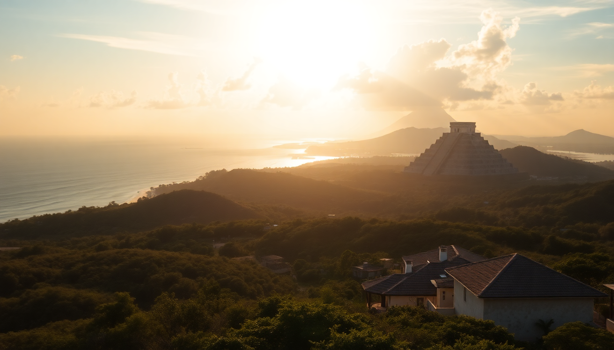

Best Day Trips from Cancun: Chichen Itza, Tulum & Isla Mujeres

I’ve done all three of these day trips from Cancun multiple times, and each one requires a different strategy to actually enjoy it. Chichen Itza is a logistical beast. Tulum is photogenic but crowded. Isla Mujeres is the easiest win. Here’s what I learned—including where to eat, which tour to book, and what to skip.
Is Chichen Itza worth the early wake-up call?
Yes, but only if you arrive before 9 AM. I left my hotel in Cancun’s Hotel Zone at 5:30 AM and made it to the gates by 8:15. By 10 AM, the main pyramid was surrounded by a wall of selfie sticks and umbrella-wielding tour groups. The heat is brutal by 11—there’s almost no shade on the main plaza.
What worked for me:
- Book a private driver through your hotel or a local agency like EcoTours. The shared buses stop at souvenir shops for 45 minutes each way. Waste of time.
- Stop in Valladolid on the way back. We ate lunch at El Mesón del Marqués on the main square—good cochinita pibil, cold beer, and actual shade.
- Bring cash for the vendors inside the site. They accept pesos only, and the bargaining is aggressive but fair. I paid 200 pesos for a decent obsidian carving.
- Skip the sound and light show at night. It’s expensive, the narration is cheesy, and you can’t see the ruins clearly.
The site itself is staggering. The acoustics at the main pyramid—clap once and it echoes like a serpent hiss—are genuinely impressive. But two hours is enough. After that, you’re just sweating and dodging crowds.
How do you actually enjoy Tulum without the Instagram circus?
Tulum’s ruins sit on a cliff above turquoise water, which makes for great photos and terrible crowds. I went on a Tuesday in November and still waited 40 minutes to get in. The site is small—you can walk the whole thing in 90 minutes—but the beach below is the real payoff.
My honest take:
- Enter through the beach path, not the main ruins entrance. There’s a separate gate near the public beach that lets you swim first, then see the ruins later when the tour buses have thinned out.
- Don’t eat at the ruins. The food stalls inside are overpriced and mediocre. Walk 10 minutes north to La Zebra on the beach road—fish tacos and a view that’s actually worth the hype.
- Skip the cenote tours that bundle with Tulum. They’re rushed and you’ll share the cenote with 50 other people. Instead, drive 15 minutes to Cenote Calavera (the “Temple of Doom” one). It’s cheaper, quieter, and you can jump in from the hole in the ceiling.
- Parking is a scam. The official lot charges 400 pesos. Park at a restaurant on the main road for free if you eat there. We used El Paraíso and the security guard watched our car.
If you’re not into ruins, skip Tulum town entirely. The beach road is a dusty construction zone, and the boutique hotels are overpriced for what you get. Playa del Carmen, 45 minutes north, is a better base for a relaxed afternoon.
Is Isla Mujeres better as a half-day or full-day trip?
Full day, no question. The ferry from Puerto Juárez (not the Hotel Zone dock) takes 20 minutes and costs about 300 pesos round trip. I caught the 8 AM ferry and had the island mostly to myself until 10:30. By noon, the crowds from Cancun’s resort zone arrive and the main beach gets packed.
What I’d do again:
- Rent a golf cart from Ciro’s Rentals near the ferry dock. 800 pesos for the day. The island is only 5 miles long, and the cart lets you hit the east side cliffs, the turtle farm, and Punta Sur in a loop.
- Eat at Lola Valentina’s for breakfast. The chilaquiles with green salsa and a michelada set me up right. Avoid the tourist-trap seafood places on Hidalgo Street—they’re all the same menu at double the price.
- Swim at Playa Norte in the late afternoon. The water is calm, shallow, and warm. By 3 PM, the cruise ship day-trippers start leaving, and you get the beach back.
- Skip the “Underwater Museum” (MUSA). The sculptures are cool in photos, but the water is murky and you’re fighting currents. Snorkeling at the reef off Playa Lancheros is better—I saw sea turtles and rays without paying for a tour.
The ferry back to Cancun runs until 8 PM. I caught the 6 PM boat and was back at my hotel in the Hotel Zone by 7:30. Easy.
What’s the best way to get to each destination?
It depends on your budget and your tolerance for tour buses. I’ve done all three methods, and here’s the breakdown:
- Chichen Itza: Rent a car from Europcar at Cancun Airport. The toll road (180D) is fast and safe—about 2.5 hours each way. Tolls cost about 600 pesos round trip. Driving yourself lets you leave at 5 AM and skip the group stops.
- Tulum: Take the ADO bus from Cancun’s downtown terminal. It’s 250 pesos, air-conditioned, and drops you a 10-minute walk from the ruins. Buses run hourly. No parking hassle.
- Isla Mujeres: Walk to Puerto Juárez from the Hotel Zone (or take a 50-peso colectivo). The ferry leaves every 30 minutes. Don’t take the ferry from the Hotel Zone dock—it’s twice the price and takes longer.
When should you skip these day trips entirely?
If you’re only in Cancun for three days, don’t do all three. Pick one. Chichen Itza takes a full day and will wreck you. Tulum is a half-day but requires early planning. Isla Mujeres is the only one that feels like a vacation day rather than a mission.
Red flags I ignored and regretted:
- Rainy season (June-October) makes Chichen Itza’s mud paths slippery and Tulum’s ruins slick. I went in July once and spent half the time hiding from a downpour.
- Spring break (March-April) turns Isla Mujeres into a floating party. Playa Norte was wall-to-wall drunk college kids. Not relaxing.
- Cruise ship days (check the port schedule online) flood Tulum and Isla Mujeres between 10 AM and 3 PM. Go on a day with no ships in port.
FAQ
Is it safe to drive from Cancun to Chichen Itza on your own? Yes, if you stick to the toll road (180D). It’s well-maintained, well-lit, and has regular patrols. Avoid the free road (180) at night—it’s winding, poorly marked, and passes through small towns with topes (speed bumps) that can damage a rental car. I’ve driven it three times without issue, but I always leave before 6 AM and return by 4 PM.
Can you see Chichen Itza and Tulum in one day? Technically yes, but I wouldn’t. They’re 3.5 hours apart by car, and both sites are hot and crowded by noon. You’d spend 7 hours driving and barely have time to walk either site. If you’re desperate, hire a private driver for the day—it’ll cost about $200 USD, but at least you won’t be rushing through a bus schedule.
How much cash should I bring for a day trip? For Chichen Itza or Tulum, bring at least 1,500 pesos ($75 USD) per person. That covers entry fees (about 600 pesos for Chichen Itza, 400 for Tulum), lunch at a sit-down restaurant, parking or transport, and a few souvenirs. Isla Mujeres is cheaper—800 pesos covers the ferry, a golf cart rental, and a good meal. Cards are accepted at most restaurants but not at ruins entrance gates or street vendors.
Conclusion
- Chichen Itza is worth the pain if you arrive before 9 AM. Drive yourself, stop in Valladolid for lunch, and skip the night show.
- Tulum is a half-day stop. See the ruins quickly, swim at the beach below, and eat at La Zebra. Don’t bother with the cenote tour bundles.
- Isla Mujeres is the easiest day trip. Rent a golf cart, eat at Lola Valentina’s, and swim at Playa Norte after 3 PM.
- Avoid all three during spring break and cruise ship days. Check port schedules and go midweek.
- Use ADO buses for Tulum, rent a car for Chichen Itza, and walk to Puerto Juárez for Isla Mujeres. Don’t overcomplicate transport.